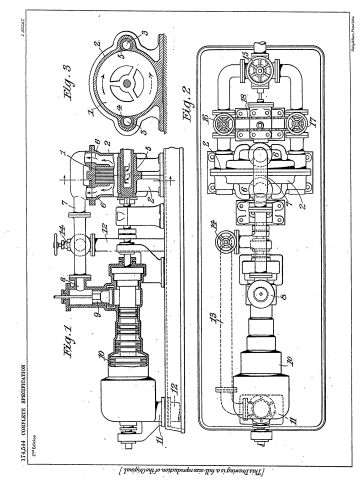
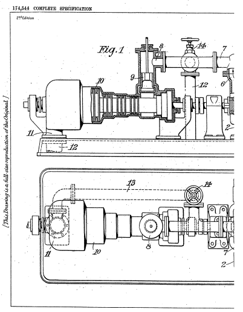
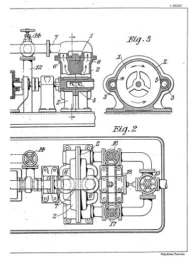

Descarga la patente original en esté enlace




Yo, Nikola Tesla, ingeniero mecánico y eléctrico, ciudadano de los Estados Unidos de América, de 8, West 40th Street, Nueva York, EE. UU., Declaro por la presente que la naturaleza de esta invención es la siguiente:
En la transformación del calor de los medios elásticos, mediante turbinas, ahora se emplean ampliamente dos métodos. En uno, el fluido de trabajo se expande a través de una boquilla estacionaria y el chorro libre, que choca contra las paletas o dispositivos equivalentes integrantes del rotor, le cede energía de velocidad, poniéndolo en movimiento por acción. En el otro, el fluido es admitido a plena presión a palas curvas o canales en el rotor donde se expande impartiendo energía al mismo y provocando que gire por reacción. Por razones técnicas bien conocidas, las turbinas que funcionan únicamente según el primer o el segundo principio casi nunca se utilizan, y ambos procesos se aplican conjuntamente en máquinas modernas. Además, como se desprende de consideraciones teóricas y diagramas de calor, la turbina de reacción con etapas de presión generalmente es capaz de una mayor eficiencia termodinámica porque tiene un “factor de recalentamiento” mayor, es decir, transforma en esfuerzo mecánico una porción considerablemente mayor. de calor de fricción que se recupera en la turbina de acción, con etapas de velocidad. Por otro lado, será igualmente evidente que el primero es más limitado en el rango de temperatura y, en vista de esta desventaja, su superioridad no sería tan pronunciada si no fuera por el hecho de que la velocidad relativa del fluido es mayor. en esta última turbina, esto resta aún más valor a su eficiencia.
Estas cualidades y deficiencias respectivas han sido plenamente reconocidas por los ingenieros hace mucho tiempo y han llevado gradualmente al empleo de ruedas de impulso y reacción fusionadas en una unidad que, por lo tanto, está mejor adaptada para cumplir con los requisitos y debería ser más económica. Pero aunque esta idea parece sólida, el rango de temperatura no se ha incrementado mucho con su aplicación y la ganancia, hasta ahora efectuada, es de hecho moderada, hasta el punto de ser dudosa en muchos casos. Se han alcanzado límites definidos al progreso en esta dirección en el aparato comercial existente y el descubrimiento de otras formas y medios para ahorrar combustible y reducir el costo de instalación y operación se ha convertido en un problema que se ha vuelto especialmente acuciante en todo el mundo por el costo enormemente mayor de esta mercancía.
Las ventajas de los principios de acción y reacción pueden realizarse más completamente mediante un proceso que constituye mi presente invención y, dicho brevemente, consiste en derivar la fuerza motriz del calor de un medio elástico primero por medio de fricción y luego por reacción. Los mejores instrumentos para este propósito, que yo conozco, son una turbina del tipo descrito en mi Patente Británica No. 24.001 de 1910.y uno del tipo Parsons, ambos conectados o trabajando de forma independiente. El fluido ingresa a mi turbina a través de una boquilla adecuada que puede ser expansiva, recta o convergente, y al atravesar los espacios entre los discos ejerce un arrastre de fricción, transformando así una parte del calor disponible en trabajo mecánico. Una vez agotado en condiciones adecuadas de temperatura y presión, pasa a través de la turbina Parsons en la que otra parte de su energía calórica se convierte útilmente por reacción. Una investigación científica cuidadosa, apoyada por experimentos, ha demostrado que el nuevo método puede obtener importantes resultados económicos y que esta combinación particular de aparatos posee características de mérito inusual.
En primer lugar, mi turbina es muy adecuada para temperaturas muy elevadas y también para altas presiones, mientras que la Parsons destaca en la eficiencia de la transformación termodinámica a temperaturas moderadas y bajas presiones. De nuevo, el primero permite que el fluido se expanda en la boquilla, el rotor o ambos, y esta flexibilidad facilita el establecimiento y mantenimiento de condiciones de presión y temperatura favorables para ambas turbinas, mejorando así la economía. Sin embargo, su combinación tiene un valor bastante excepcional en los casos en que las unidades reversibles son indispensables, como a bordo de un barco, donde proporciona un aparato más simple, más eficiente y mucho más efectivo para la propulsión hacia adelante y hacia atrás.
Si bien mi turbina dará los mejores resultados en cooperación con los Parsons, está eminentemente calificada para servir como primera etapa, o etapas, junto con otros tipos de turbinas, de cualquier tipo, también con motores rotativos y alternativos, y en este sentido. En un sentido más amplio, mi proceso mejorado puede definirse como aquel en el que el calor disponible de un medio elástico se transforma de manera útil primero por fricción, como se indica, y luego por acción o reacción.
Fechado el 31 de marzo de 1921.
Nikola Tesla.
Yo, Nikola Tesla, ingeniero eléctrico y mecánico, ciudadano de los Estados Unidos de América, de 8, West 40th Street, Nueva York, NY, EE. UU., Declaro por la presente la naturaleza de esta invención y de qué manera se debe realizar. , que se describirá y comprobará en particular en y mediante la siguiente declaración:
En la transformación de la energía térmica de los medios elásticos, por medio de turbinas, ahora se emplean ampliamente dos métodos. En uno, el fluido de trabajo se expande a través de una boquilla estacionaria y el chorro libre, que choca contra las paletas o dispositivos equivalentes integrantes del rotor, le cede energía de velocidad, poniéndolo en movimiento por acción. En el otro, el fluido es admitido a plena presión a palas curvas o canales en el rotor donde se expande impartiendo energía al mismo y provocando que gire por reacción. Por razones técnicas bien conocidas, las turbinas que funcionan únicamente según el primer o el segundo principio casi nunca se utilizan, y ambos procesos se aplican conjuntamente en máquinas modernas. Además, como se desprende de la consideración teórica y los diagramas de calor, la turbina de reacción con etapas de presión generalmente es capaz de una mayor eficiencia termodinámica porque tiene un "factor de recalentamiento" mayor, es decir, transforma en esfuerzo mecánico una porción considerablemente mayor. de calor de fricción que se recupera en la turbina de acción, con etapas de velocidad. Por otro lado, resultará igualmente evidente que el primero es más limitado en el rango de temperatura y, en vista de esta desventaja, su superioridad no sería tan pronunciada si no fuera por el hecho de que generalmente la velocidad relativa del fluido es mayor en esta última turbina, lo que resta aún más valor a su eficiencia.
Los ingenieros han reconocido desde hace tiempo estas cualidades y deficiencias respectivas y han conducido gradualmente al empleo de ruedas de impulso y reacción fusionadas en una unidad que, por tanto, está mejor adaptada para satisfacer los requisitos y debería ser más económica. Pero aunque esta idea parece sólida, el rango de temperatura no se ha incrementado mucho con su aplicación y la ganancia, hasta ahora efectuada, es de hecho moderada, hasta el punto de ser dudosa en muchos casos. Se han alcanzado límites definidos para avanzar en esta dirección en el aparato comercial existente y el descubrimiento de otras formas y medios para ahorrar combustible y reducir el costo de instalación se ha convertido en un problema que se ha vuelto especialmente acuciante en todo el mundo debido al costo muy elevado de este producto.
Las ventajas económicas contempladas se pueden realizar de forma más completa a través de un proceso que constituye mi presente invención y, dicho brevemente, consiste en convertir parte de la energía térmica de un medio elástico en trabajo mecánico por fricción, preferiblemente a alta temperatura, y otra parte por acción o reacción a una temperatura más baja. Los mejores instrumentos para este propósito, de los que tengo conocimiento, son una turbina de fricción del tipo descrito en mi Patente Británica No. 24.001 de 1910.y uno del tipo de reacción, como los Parsons, ambos conectados o trabajando de forma independiente. El fluido ingresa en mi turbina a través de una boquilla adecuada que puede ser expansiva, recta o convergente, y al atravesar los espacios entre los discos ejerce un arrastre de fricción, transformando así una parte de la energía térmica disponible en trabajo mecánico. Una vez agotado en las condiciones adecuadas de temperatura y presión, pasa a través de la turbina de reacción en la que otra parte de su energía calórica se convierte de manera útil por reacción.
En los dibujos adjuntos, la figura 1 pretende representar mi turbina mejorada y una del tipo Parsons unidas operativamente y con sus ejes conectados de forma flexible; La figura 2 es una vista en planta del mismo con los conductos de suministro y las válvulas de entrada, y la figura 3 una sección transversal vertical de mi turbina.
Haciendo referencia a las figuras, 1 ilustra el rotor de mi turbina encerrado en una carcasa 2, 2, provista de dos entradas 3, 3 para el medio de trabajo, boquillas 4 y 5 - una para funcionamiento normal y la otra para inversión - y dos de escape aberturas 6, 6 que conducen a través de un conducto 7 a la entrada 8 y válvula deslizante 9 de la turbina Parsons 10. El escape 11 de esta última comunica a través de un conducto 12 con el condensador al que también está conectado un by-pass 13, ramificado salida del tubo de escape 7 y equipada con una válvula 14. Una válvula de mariposa 15 controla la admisión del fluido elástico a mi turbina que tiene, además, dos válvulas adecuadas 16 y 17, preferiblemente unidas por medios mecánicos como cadena 18, lo que les permite girarse juntos para que uno se cierre herméticamente mientras que el otro se abre de par en par.
La turbina Parsons se acciona entonces en una dirección opuesta a su pala pero ofrece una resistencia relativamente pequeña debido al vacío en la misma; mi turbina, por otro lado, desarrolla una cantidad de energía mucho mayor que cuando funciona como se describió primero debido a su conexión directa con el condensador y, en consecuencia, el aumento de la caída de calor.
Una investigación científica cuidadosa, apoyada por experimentos, ha demostrado que el nuevo método puede obtener importantes resultados económicos y que esta combinación particular de aparatos posee características de mérito inusual.
En primer lugar, mi turbina es especialmente adecuada para temperaturas muy elevadas y también para altas presiones, mientras que la Parsons está particularmente adaptada a la transformación termodinámica a temperaturas moderadas y bajas presiones. De nuevo, el primero permite que el fluido se expanda en la boquilla, el rotor o ambos, y esta flexibilidad facilita el establecimiento y mantenimiento de condiciones de presión y temperatura favorables para ambas turbinas, mejorando así la economía. Su combinación es, sin embargo, de un valor bastante excepcional en los casos en que las unidades reversibles son indispensables, como a bordo de un barco, donde proporciona un aparato más simple y eficaz para la propulsión hacia adelante y hacia atrás, siendo mi turbina mucho más confiable que las formas actuales con cubos y cuchillas que son muy propensos a deteriorarse y dañarse fácilmente.
En el uso de diferentes tipos, como se contempla aquí, las gotas de calor individuales en ellos pueden variar considerablemente en magnitud, pero para dar un ejemplo práctico, diría que se pueden obtener muy buenos resultados, cuando se trabaja solo con vapor sobrecalentado, admitiendo el vapor a la boquilla de la turbina de fricción a aproximadamente 1100° F y expulsándolo a aproximadamente 550° F en una turbina de reacción capaz de operar de manera segura a esa temperatura.
Si bien mi turbina en tales combinaciones dará los mejores resultados en cooperación con los Parsons, está eminentemente calificada para servir como primera etapa, o etapas, junto con otros tipos de turbinas, de cualquier tipo; también con motores rotativos y alternativos, y en este sentido más amplio, mi proceso mejorado puede definirse como uno en el que la energía térmica disponible de un fluido elástico se transforma de manera útil primero por fricción, como se indica, y luego por acción o reacción.
Habiendo ahora descrito y comprobado particularmente la naturaleza de mi dicho invento, y de qué manera se realizará el mismo, declaro que lo que reclamo es:
Fechado el 31 de marzo de 1921.
Nikola Tesla.